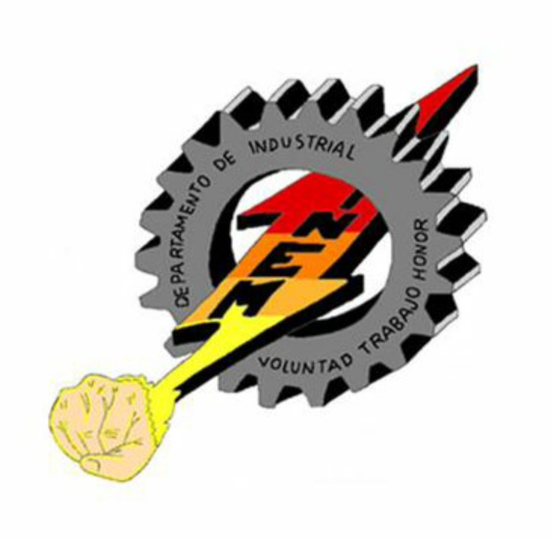

Información
Sobre PC
La rama industrial se especializa en la reparación de ordenadores y en la solución y prevención de errores asociados a estos. También se enfoca en el uso adecuado y el conocimiento de sus componentes, incluyendo internet y algo de programación. Por supuesto, instruye a sus alumnos en el concepto de seguridad, el empleo adecuado de dispositivos y algunos conceptos básicos de la sub rama de electricidad.
Sobre SENA

Esta articulación de Industrial PC, adquirimos un profundo conocimiento de esta disciplina y nos especializamos en nuestra formación como técnicos de sistemas. Esto les permite acceder de manera ágil al mercado laboral actual y contribuir de manera significativa a nuestra sociedad. Es crucial destacar que también nos enfocamos en la adquisición de competencias relacionadas con la reparación, prevención y mantenimiento de dispositivos físicos y redes de comunicación, desempeñando así un papel fundamental en el mundo contemporáneo.